Mavi Roberto The MOCA Tour
Artists and images cited in the Essay: Art Lover's GuideClick images or titles
for the artist's showDIGITAL PAINT AND DRAW: Natural Media
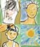
These first five artists works were chosen because of their purity in having kept their digital tools limited to mainly those that mimic natural media. In doing so, work like Mavi Robertos Colfuto clearly demonstrates the looseness and spontaneity of line that can be achieved with digital drawing tools and a pressure sensitive tablet. Areas of flat pure color allow the textured chalk-like marks to come forward and Mavi has selected a controlled palette of colors that keep this image fresh and full of fun, like notes from a day at the beach.
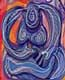
Here, again, is the spontaneity of digital paint and draw software celebrated within this piece by Joan Myerson Shrager. Contemplative Nude is all about line and color and volumes described in large swooping motions. And, while the suggested figure appears at rest, the energy of the drawing and the layers of color are a delightful dance. Shrager may have fudged a bit and moved out of the natural media tools by using a digital masking technique to create some precisely placed and interesting drop shadows or she could have taken advantage of digital image layers. But then, a watercolorist or airbrush artist would have used masking foil to aid them in creating the same effect, which adds lots of interesting dimension and weight to the piece. As with traditional media theres always more than one way to create a desired effect.
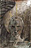
In this piece, Jago Titcomb has created a much more gritty and sober feeling. Texture abounds in this piece and even the apparent light source in the upper right hand corner seems to erode the image rather than illuminate it. A winged creature, perhaps an angel, which has fallen, at least, to the bottom of the picture frame seems etched out of stone and yet the texture also retains a lot of the appearance of ink and watercolor media. Transparent rays of an aura behind the figures head and some very expressive eyes lend this image a lot of narrative potential, which is of course the goal of any good illustration.
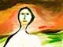
D.L. Zimmermans work is notable because he uses the mouse as his drawing tool. I know a couple of other artist who also have not given into the luxury of the pressure sensitive tablet, which is something I find pretty amazing in itself. However, the thick sumi ink-like brush strokes, which expressively defines the figure in Tulare County 2 and sets it off from the background of more softly blended colors, bears good witness to the fact that the art lies in the hand and eye of the artist and not in their tools. I love the stark whiteness of the figure and well chosen touches of color that define the subjects features.
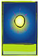
Finally, under the heading of paint and draw I just had to include this example of Steiner Rosenburgs work. The simplicity of this piece entitled Midsummer Day is intriguing. I enjoy the curves and weight of its few lines and even though he probably used a gradient filter to create the smooth glow that represents the suns energy, this piece is mostly about how expressive a simple drawing can be. Even though it is midsummer I see in the saturated colors the summer of or near the Arctic Circle where all the suns energy still cannot fully pierce all that atmosphere. And yet, there is all the playfulness of summer in the depiction of the suns rays and the drop shadowed rectangle that floats above a saturated cool spring green.DIGITAL PHOTOGRAPHY : PHOTO MANIPULATION
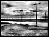
The basic challenge of photography is to take an image of the natural world and move us beyond our everyday experience. One of the techniques employed to do this is controlling the tonality of the print to reveal otherwise hidden textures and to place and emphasize lights and darks to achieve an expanded sense of composition. When I saw this photo by Jeff Alu, entitled Poles, I experience just this sort of epiphany. Yes, here are telephone poles and even if I had recognized the similarity between these poles and the crucifix for myself many years ago; this photo brings that observation home so powerfully as to make me feel that I am seeing the concept for the first time. With dramatic use of dodge and burn tools, Jeff has created a heightened sense of drama in the clouds and puddles of water and created a scene that recalls how these implements of death and torture have lined countless roadways, but then, here they are just innocent poles.
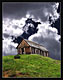
Digital photo-manipulation offers simple tools and processes that immediately expand what is possible. I do not believe I have seen a combination of black and white photography and full color in a single image until the innovation of digital image editing software. I believe the two sets of chemistry required would not be compatible. Steve Binghams example Old Colorado Cabin demonstrates how a good photo of an interesting subject can be pushed even further by careful digital manipulation. The cabin with its washed out color creates such a nice transition between the black and white sky and the full color hillside that you have to look twice to see what is going on in this interesting and expressive photograph. This is a good straightforward example of how digital tools have expanded the aesthetic possibilities of traditional photography.
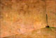
And, when it comes to manipulating color, adding texture and lending precise control to focus and cropping there is simply no better more efficient tools in current photography than the computer. For example, this photo by Ricardo Baez Duarte from his Memories and Solitude series has it all. A minimal subject (broom in a corner) is, by coloration and texture, made into something quite a bit more significant. The old world colors and the texture which darkens and makes the surface of the photo appear grimy and almost ancient, as well as, very careful composition which takes the corner and the broom out beyond where we would expect it to be, even more isolated, makes it all a bit more sad and quite. Only the artifact of human beings how long departed? Like a scene from Pompeii.DIGITAL PHOTOGRAPHY: Photo-Collage
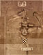
Another art form related to photo-manipulation is the collage and here again, the capabilities of digital tools have expanded this genre far from anything ever before possible. To the simple processes of cut and paste have been added instant resizing, reversing the image, color toning, texturizing, advanced compositing and layering techniques and a whole host of digital effects. The whole genre of collage has been energized by the vision of people who might never have consider themselves artists or by established artists who have found digital collage techniques can now bring a wider range of materials and image sources into one composition. Damnengine's Motion Study is almost nostalgic as it recalls collage art from the 1930s by masters of the genre, such as Man Ray and Max Ernst. One might even say Futurist in its depiction of motion and its predictions for mans evolution in an industrialized society. Of course, the sepia tone and carefully achieved staining makes it seem a believable relic from not too recent history. Muybridge meets the machine age.
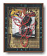
Within the MOCA galleries Larry Hopewell's series the Rachel Boxes is a prime example of digitally expanded and enhanced photo-collage. Previously, Larry has constructed actual boxes but finding himself shy of materials and space to manage the carpentry required and, at the same time, filled with the need to create and process some of the emotions of a lost relationship, he turned to digital devises. The entire series is very powerful and I selected Fast Train only because it reads so well on the web. We can see how nicely the wooden texture of the box and the small collage of images situated at the back of the box along with the drop shadow of the flat red outline drawing of cactus which itself seems to sit on the front glass depicts an actual constructed box. This is not your normal photo-collage, edging almost into the realm of a 3D construction, but since it is achieved so nicely with only a composite of two-dimensional elements and photos (or scans) it belongs to this genre almost by default.
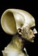
Beyond cut and paste the film and video industry has invented the verb compositing to define the combination of disparate images into one seamless and believable composite reality. This is exactly what Gulnur Guvenc has achieved with the series of collages known as Chtulhu People. Guvec has brought to light an unknown race of mythical sea people with exoskeletons resembling seashells and decidedly humanoid features. Thoroughly believable as to proportions and seamless texture and coloration these creatures seem ready for the annals of Ripleys, where seeing may not necessarily lead to believing. But the ability to look into and share someones imagination can pose delightful questions about the nature of how we perceive reality. Especially when you consider how much of the world outside our daily path we know only from the pictures of it we have seen in our magazines and books. Undoubtedly as more digitally altered reality enters our combined cultural imagination the immediate acceptance of photographic evidence of truth will have to be adjusted. We will have to become more entertained by such evidence and less convinced.DIGITAL PHOTOGRAPHY: Tabloid Culture
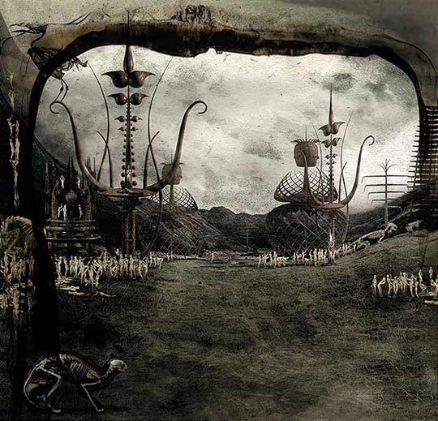
While Jeromes Garden by Alessandro Bavari does not fit neatly into the category of collage, its intent to depict in photographic detail an alternate world certainly qualifies as some sort of digital photo-manipulation art. Jeromes Garden appears to be a precursor for Bavari's larger series based on Sodom and Gomorra and employs the integration of forms created in digital 3D design programs with actual photographs and digital layering, lighting, coloration and texture filters to produce a world which shares the vision of Hieronymus Bosch, Bruegel and others. Pointed and definitely dangerous looking structures, groupings of wee little people and creatures of a demonic bearing all combined in a dark atmospheric poetry. A revival of dark gothic themes appears to have been stimulated and supported by digital imaging tools, for it is so widely prevalent in web based art galleries. With its amalgam of violent situations, distorted and augmented figures, darkness and blood the whole genre of gothic horror and photo-journalism seems to be combining in some very interesting ways.David Ho's art also mines this dark vein. A designer and illustrator, Ho imbues his images with a good deal of allegory. Here in Body and Soul, the body takes on an empty and even disposable role as it hangs loosely from a much more substantial metallic orb, whose energy rays are more physical than just light. If not a comfortable image, it is at least a powerful depiction of the eternal reality of the soul over the transient nature of the body. Like Bavari, Hos work is an integration of figures created in Poser and partially rendered in Bryce or some other 3D software and then composited in Adobe Photoshop to create an image that vibrates between pure imagination and the presumed reality of the photograph.
Back more into the realm of pure photo-manipulation; the work of Shannon Hourigan shares this sense of gothic pictorial revival. But due to more straightforward use of photos as the basic element in her work, demonstrates Walter Benjamins observations of the special power of the photo. In Portrait, Hourigan starts with a picture of herself that; in style, coloration and basic pose would appear almost as a relic of the renaissance. Then, she applies those angry looking scratches of white that seem to dig past the photos surface into the paper below. That this is done with such purpose and, to no small degree, to a photograph of herself raises some interesting issues of body image, violence a whole host of modern concerns. This goes beyond drawing a moustache on the Mona Lisa and we see in some of her other works her expressed interest in the post-human body; that is, tattooing and augmentations both real and surreal.
For lack of a better term, I am calling this emerging art style, which combines a gothic sense of horror with presumed reality of photojournalism, Tabloid Culture Art. We cannot seem to drag our eyes away from these images. Like the preposterous headlines of the tabloids, which are our original mass realizations of manipulated photographs, violence and bizarre accounts; this imagery draws a fine line between pandering and offering the art world a look at an emerging cultural phenomenon. Digital art making tools have a lot to do with this especially in such work that often integrates a lot of provocative text and typography along with its dark and challenging imagery.
THE QUEST FOR PRESENCE: Fractals
When enjoying fractal art images, I tend to gravitate more toward those that work against the basic, familiar expressions of infinitely repeating forms spiraling back into the center of the frame. While such images can be quite hypnotic, I find them colder and more mechanized, than works such as those by Janet Parke, represented here by a piece entitled Dent. Parke is also a dancer and I see a good deal of movement in her fractal artwork and I appreciate her compositional sense, which uses the whole frame. This does not mean that she is above performing those beautiful spiraling arabesques, but there is, often, other steps, other weights and directions in her imagery. Her work is a prime example of fractal art that is not simply an expression of a single mathematical formula, but is built up from several passes with a poetic attention to composition.
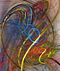
Critical Remarks by Karin Kuhlmann is another example of the diversity of fractal imagery and appears to be as much a drawing as an image generated from a mathematical formula. In this case an action drawing with elements that seem spontaneous and yet repeat within the picture frame. In addition the color and value of these marks along with an apparent glow makes it seem as if the image is made of tubes of neon light or the motion trails of intense points of light burnt into a photographic negative. It is worth noting that Don Archer, who co-founded the MOCA website is an accomplished fractal guru in his own right. Look for a link to his innovative use of fractal imagery at the bottom of the MOCA home page. He refuses to let me say more.INTEGRATIVE DIGITAL ART
An accomplished painter and graphic artist, Hans Dieter Grossmanns digital artwork stands as a tribute to his ability to move through and master whatever media he chooses to utilize. This untitled piece begins by revealing its origins in a fractal generating software, but then, true to the genre of Integrative Digital Art, Grossman has applied his own digital paint to the surface emphasizing or eliminating certain pictorial elements to arrive at this hybrid image. Recalling a Georgia OKeefe composition subtle use of a distortion brush has emphasized and arranged petal-like folds that seen ripped from the pictures surface and envelope another stamen-like form that originates from the opposite side of the composition. The colors and texture of the paint creates a smooth and surreal surface. Grossmann has used several different digital art processes to create an image ultimately reflecting only his personal vision and not the tools used to achieve it.
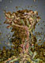
Transcending the tools and materials one chooses to use to create art is the goal of every artist, the results being art that is solidly ones own voice. Often the artists personality is reflected by a signature appearance to ones work and therefore describes a cohesive body of work. Afanassy Pud is such an artist. He has a method for making forms exhibiting a pearlesecent glow or seem constructed of softly rounded and glowing elements. Wind begins with a stormy gray gradient in the background in front of which is constructed a tree form glowing with Pud's signature light. But, the real activity to this image is in the suggestion of wind whipping around this tree form and filling the atmosphere with debris. Under closer examination one can discern faces and heads, the shapes of arms and hands (or tree limbs) that seem to grasp desperately for a handhold. Associations with a family tree and a history of upheaval inform this piece with its poetry. Or, perhaps there is no tree and, as in nature, we see not the wind itself but the results of the wind; a vortex of violent activity which people have been swept into.
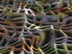
In his piece entitled Grate Escape John Clive demonstrates the addition of 3D modeling software to the digital artists palette of tools. A colorful and complex background has been mapped to an undulating, organic grid-like object. This object was created in any number of 3D modeling software and the process of mapping or applying another digital image to the virtual surface of the object is a standard method of working within these modeling environments. In addition, control over surface characteristics and lighting is created before ray tracing software renders the image. In effect, Clive has a photographic document of an object that never existed. Is it paint, or sculpture, or photography? If you have to ask, then it is probably an Integrative Digital Art piece; which is to say a synthesis of all that and more in the hands of a master illusionist.Ken Oberheu has also integrated several digital art tools and software into this piece entitled The Flight of Brilliance. Working to construct elements in a 3D modeling environment and then applying these elements in the fashion of a collage yields this interesting result. While the background appears in deep perspective the foreground elements appear flat and yet seem to serve as a scaffolding which supports a form looking, for all the world, like a piece of modern sculpture painted yellow and suspended by wires. This form seems to be repeated in the upper left hand corner reversed and rotated with its color inverted as with a photographic process. This play of flat and deep space, 3D verses 2D, photo or paint imbues the piece with activity and mystery.
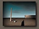
It is not so far to go from creating 3D objects to bring into a 2D image, as to then create a complete environment inside the computers limitless virtual space in which to hold or display these objects. One such is the Glass City of artist Kolja Tatic, a collection of scenes (places, if you will) that one might encounter on a tour. Loneliness is just one such place from this series of images that exemplifies the beauty and quiet of Tatics surrealistic and poetic world. This piece has all the trappings of classic Surrealism and stands as proof that; computers are the dream machines of modern surrealists.
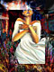
Ileana Frometa Grillos work is a tour de force of integration of many digital image manipulation techniques, as She Surrenders indicates. Grillo uses images captured with a digital camera to construct, using collage techniques, an intricate background, whose colors are manipulated to suggest an altered natural world. Into this colorful space she draws and paints using a pressure sensitive digitizing tablet, her women. By saturating colors and creating heavy outlines using various digital filters, the photographed images are flattened out and this causes the illustrative style of her figures to pop forward. Tight, well constructed composition and her native sense for color makes these pieces prime examples of what Integrative Digital Art can achieve in the hands of an talented illustrator.
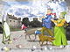
Another illustration by Orna Ben-Shoshan brings us full circle on our tour of the MOCA galleries. What began with a discussion of digital painting and then photography comes together in a very unexpected way in this piece entitled Illustrated Friends. What I find so charming about this illustration is that there is no pretense as to the use of an unaltered, very normal looking photograph in the background, except that a color photograph is framed by its own black and white version. Similarly there is nothing but good quality, straight forward illustrative drawing and painting going on to achieve the guests as they arrive with their pets. What I find amazing is how well these two wildly divergent types of images work together. All of it works, magically together, even the small detail of the positioning of the standing mirror along the z-axis, to emphasize and create the representation of 3D space, just exactly where it is needed in the composition makes this image a joy. And, the light bulbs and the reading lamps that serve as the pets heads and the notion of all these flat images casting shadows on the driveway relates to the theme of surrealism that has also run throughout this tour and the essay that brought us to this point.This tour ends here with a funny little picture that combines so many high tech processes, so many hours of human work to create the tools to achieve this and yet very little of that shows beyond the skill and personal vision of the artist. There is no such thing as digital art. There are digital tools, which in the hands of talented and patient human beings, can be used to make Art. Is the world ready for so much Art? Wait and see, my friends, wait and see.
JD Jarvis
November, 2002
Las Cruces, NM